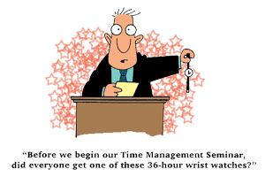

| Time
Management Strategies
Contributed
by: Samuel P. Mallare
Developing
a system to get organized is not only possible but also necessary
if you want to be a high achiever. Here are some time-saving
strategies to help you manage your time better:
- Goal
Setting: Setmeasurable ogjectives for your career,
family, finances, fitness or social life. Written goals
provide a framework to help you assess your use of time.
What gets measured gets done.
- Setting
Priorities : List all pending activities in priority
order. Assign the letter A to tasks that must be done, B
to those that should be done, and C to those that might
be done. Tackle the items in your A list first.
-
Brevity: Stress concise communications.
Limit business calls to five minutes. Write one-page memos.
Conduct twenty-minute meetings. Prepare executive summaries
of lengthy reports.
-
Bunching: Cluster similar activities together.
Schedule blocks of time for returning telephone calls, dictating
letters or reports, reading the mail, holding routine meetings,
and doing desk work.
-
Chunking: Break down complex or unpleasant
tasks into smaller, more manageable parts. Complete one
chuck first (a one-page outline of a lengthy report, for
example) and another chunk (maybe the introduction) later..
-
Closure: Condition yourslelf to complete
each task the first time out start it. Example: Ask a drop-in
visitor to wait outside until you finish the memorandum
on which you are working. Emphasize completion.
-
Deadlines: Set personal due dates that
precede the stated deadlines, or create deadlines when none
is given. Submit reports, budgets, and forms before due
dates.
-
Delegation: Achieve results through others
by assigning routine activities (reports, business trips,
memorandums, meetings, research) to appropriate subordinates.
Share the credit.
- Elimination:
Get rid of time-wasters - long lunches, going-nowhere committees,
long telephone calls, trips - anything that distracts you
from your goals. Purge files (when in doubt, toss it out).
- Planning:
Anticipate future events. Planning time saves operating
time, so prepare strategic plans, weekly plans, and daily
to-do lists. Each morning, review your game plan for the
day.
- Prime
Time: To make the most of your energies, try to
get your time clock and your biological clock in sync. Schedule
important activities when your energy level is highest.
- Saying
No: Avoid overcommitting yourself. Success depends
on knowing what not to do. Be firm but gracious
in rejecting tasks unrelated to your goals, and reject time
wasters whenever possible.
- Single
Handling: Finish items in one session. Try to handle
each memorandum, folder, letter, or telephone call only
once. Avoid multiple handling of items.
- Hiding
Out: Schedule quiet time. Take a walk, use retreats,
close the door, smell the roses, reflect. You need time
for thinking and relaxing each day.
- Fitness:
Jocks have known this for years: Exercise increases energy.
To charge your battery, schedule time to jog, golf, play
racquetball, or simply walk.
Source:
Hartley, Harry J. "Make Time to Manage Your Time More
Effectively". 1990 |